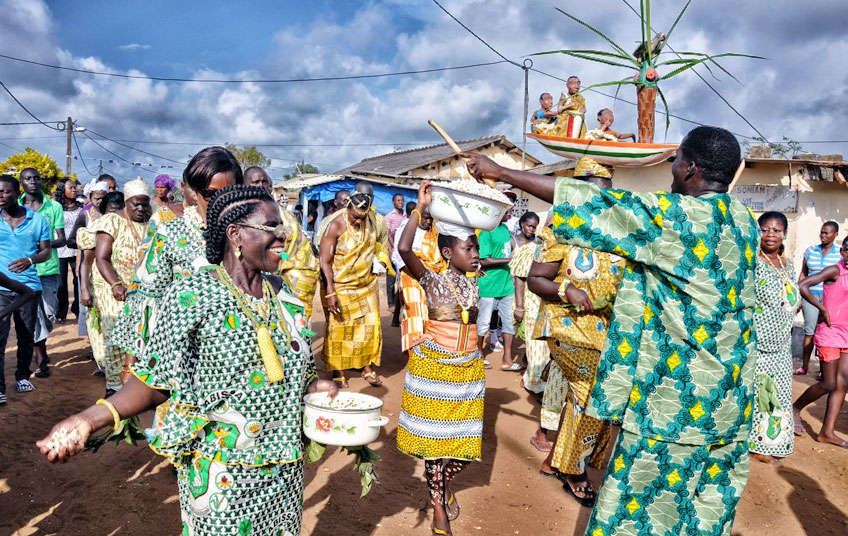
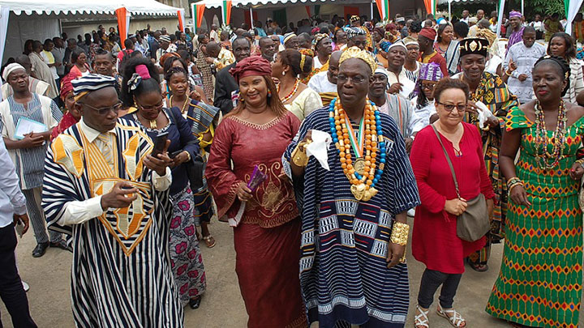
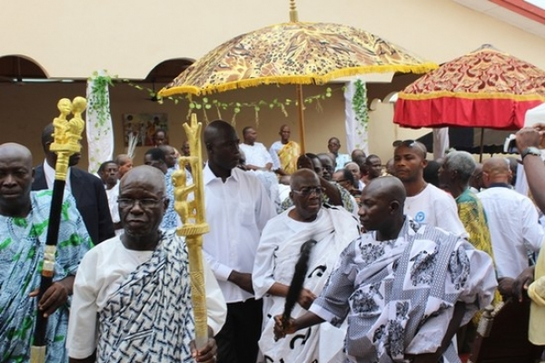
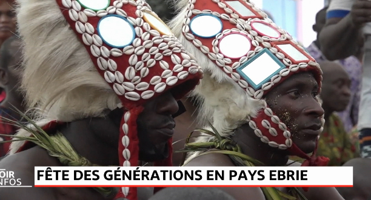

L'ABISSA
Si Grand-Bassam a parfois des airs de famille avec La Nouvelle-Orléans, alors l'Abissa pourrait être son carnaval. Célébrée une fois l'an par les Apolloniens, cette fête traditionnelle se veut avant tout une manifestation de contestation du pouvoir et de critique sociale sur la place publique, expression folklorique du principe démocratique régissant la communauté n'zima.Lire la suite...
D'après la légende, le chef des N'Vavilés, une des sept tribus composant le clan n'zima, se rendant un jour en forêt, y aurait surpris des êtres surnaturels exécutant une danse rituelle autour d'un tam-tam céleste. Ayant ramené chez lui le tam-tam parleur (Edogbolé), il se serait vu enjoindre par les esprits de la forêt d'exécuter une fois l'an cette danse avec les siens, au moment où les graines de palme arrivent à maturité. Les N'Vavilés devinrent ainsi les gardiens de l'Edogbolé et les principaux dépositaires de la danse sacrée de l'Abissa. La célébration de l'Abissa s'étend sur deux semaines. Au cours des sept premiers jours (Siédou), chacun prépare ses costumes et ses chorégraphies, et mûrit ses critiques. Les travaux des champs s'arrêtent, les pratiques occultes et les funérailles sont interdites, et l'Edogbolé est emmené du domicile du chef n'vavilé vers un lieu tenu secret, avant d'être transporté, au terme de cette semaine de " retraite mystique ", sur la place publique où tout le monde danse dès le lundi, à l'occasion du Gouazo, qui marque le début officiel des festivités. Le mardi est le jour des rois, le mercredi celui des femmes, le jeudi celui des cadres et le vendredi celui des chefs de village. Le samedi lors de l'Ewoudolé, tout le monde danse à nouveau ensemble tandis que les sept familles n'zima font allégeance au roi. L'Abissa atteint alors son apothéose et chacun défile, déguisé et maquillé. Le dimanche a lieu la cérémonie d'adieu au génie de l'Abissa et le rite de purification du roi au bord de la mer. Fête multiforme, puisqu'elle célèbre à la fois l'arrivée à maturité des graines de palme, le passage d'une année à une autre et les retrouvailles entre les sept tribus du clan n'zima, l'Abissa fait aussi office de régulateur social, en cela que la parole s'y exprime publiquement et librement, dans le but de rétablir l'équilibre au sein de la communauté : réunies en un grand défoulement de gaieté expiatoire, toutes les classes sociales y expriment leurs doléances ou critiques, dénoncent et se confessent, afin d'obtenir le pardon ou d'exprimer leur repentance vis-à-vis de la société. Les barrières sociales et les interdits sont alors abolis et les chefs de tribu et le roi peuvent être critiqués publiquement pour mauvaise gouvernance et actes répréhensibles. La contestation est double, puisqu'elle s'exprime à travers la parole, mais aussi par le biais du déguisement, qui identifie celui qui le porte à la catégorie décriée. Lors de l'Abissa, les rôles sont inversés : on peut y voir des hommes maquillés dansant vêtus de perruques et de colliers de perles. La fête se termine en une grande fanfare carnavalesque qui scelle à la fois les retrouvailles des sept tribus n'zima autour de l'Edogbolé et la joie de s'être libéré de ses rancoeurs et de ses frustrations à travers le Koundoumé, ou journées du pardon.

FÊTE DU DIPRI
Sans doute l'une des manifestations les plus impressionnantes du folklore ivoirien, la fête du Dipri, ou Kpon, a lieu chaque année au mois d'avril dans la localité de Gomon (département de Sikensi), à environ 90 kilomètres d'Abidjan.Lire la suite...
Fête commémorative du sacrifice consenti par un ancêtre pour sauver son peuple de la famine, elle est aussi appelée " fête du sang " par certains, tandis que d'autres la considèrent ni plus ni moins comme une " célébration de la sorcellerie ambiante " : au cours de cette cérémonie en effet, le sang coule des blessures que s'infligent volontairement des hommes en transe, qui se savent invulnérables et auxquels un pansement miracle garantit une guérison immédiate. L'un des signes manifestes de cette célébration est que tout le monde peut y entrer en transe à tout moment. Les Abidjis la comparent volontiers à la Pentecôte chrétienne, où le Saint-Esprit est descendu sur le peuple de Dieu. Pour eux, le Dipri, force venue de Dieu pour sauver le peuple abidji, se transmet de père en fils et possède un pouvoir protecteur qui procure le bonheur aux fidèles se confiant à sa rivière sacrée. Outre les transes, cette célébration se caractérise également par des sacrifices rituels d'animaux. On adore ainsi la rivière avec une biche royale (biche blanche), et la rumeur affirme également que le chien joue un rôle important dans le Dipri, car son sang et sa viande fortifient ceux qui les consomment, amenant leurs blessures à se résorber plus vite. Point culminant de cette manifestation religieuse : les initiés qui, après un bain purificateur, se " piquent " au couteau, certains pouvant recevoir jusqu'à plus de quarante lacérations dans le bas-ventre. Le début de la fête est annoncé par le tam-tam parleur Cocobiakri, la fin de la célébration étant quant à elle marquée par une démonstration de puissance entre les différents groupes, qui symbolise l'affrontement entre les forces du bien et du mal et donne lieu à une transe collective. La fête du Dipri présente des caractéristiques qui se retrouvent chez d'autres groupes de l'ensemble akan, comme celle d'être basée sur un mythe fondateur dont le héros a sacrifié sa progéniture pour le bien de son peuple, à l'instar de la reine Pokou, figure emblématique de la geste baoulé. Sa fonction expiatoire et cathartique la rattache par ailleurs à l'Abissa des N'Zimas, au même titre que sa célébration d'une forme de renaissance, confortée par le fait qu'elle a lieu à la période charnière située entre la fin de la grande saison sèche et le début de la grande saison des pluies, marquant ainsi la fin d'un cycle et le commencement d'un autre.

FÊTE DES IGNAMES
La fête des ignames est célébrée chaque début d'année par les ethnies appartenant au groupe akan. Elle rend hommage au tubercule nourricier qui sauva le peuple ashanti lors de son exode de l'ancien Ghana vers la Côte d'Ivoire.Lire la suite...
D'ailleurs à cette occasion, la consommation d'igname est formellement interdite, celui-ci n'étant utilisé qu'à des fins rituelles. Fête de reconnaissance marquant le commencement d'une nouvelle année que l'on souhaite placée sous le signe de la prospérité, cette célébration réaffirme par ailleurs la pérennité du lien existant entre les vivants et les morts et, à l'instar de nombreuses fêtes akan, se concrétise par la tenue de rites purificateurs. La veille de la cérémonie, les tam-tams, tambours, oliphants et autres cors royaux annoncent officiellement la fin d'une année et le commencement d'une autre. Le jour de célébration proprement dit, le roi, paré d'attributs richement dorés (parfois des imitations en bois sculpté pour plus de sécurité) se rend à la rivière, escorté du peuple et de ses nanans (chefs coutumiers), y accomplit des libations purificatrices, s'y baigne et danse, lançant un message d'espoir à ses sujets qui le raccompagnent en un long et joyeux cortège une fois ses ablutions terminées. Après ce bain rituel a lieu la présentation des chaises et tabourets sacrés reproduisant dans leurs différentes formes et spécificités stylistiques les hiérarchies complexes des différents lignages en présence. Bénis et lavés à leur tour, ils sont alors enduits du sang d'animaux sacrifiés et de poudre d'igname et brandis avec force invocations aux ancêtres disparus. La présentation achevée, les restes des offrandes animales sont en partie brûlés, tandis que l'autre partie est consommée par l'ensemble des participants à la cérémonie, scellant ainsi l'union entre les vivants et les morts.

FÊTE DES GÉNÉRATIONS
Fête traditionnelle, Folklore et Kermesse
Cette fête s'inscrit dans un cycle de célébrations pluriannuel et marque l'arrivée à maturité d'une nouvelle génération, qui acquiert par ce biais son émancipation, et le premier statut social grâce auquel son rôle aura désormais une influence déterminante sur la vie de la communauté,Lire la suite...
tandis que pour les " survivants " de la précédente génération, elle marque le début de la retraite. La fête des générations se déroule sur deux jours, mais sa préparation peut durer plusieurs mois ; les journées précédant celles de la célébration sont généralement rythmées par le chant des futurs émancipés défilant gaiement et fièrement dans les rues du village. Au cours de la cérémonie, tam-tams et tambours, instruments de prédilection des peuples lagunaires, résonnent généreusement. La fête se déroule en trois étapes : la première consiste en une danse guerrière visant pour les " nouveaux venus ", à démontrer leur virilité et prouver qu'ils seront aptes à relever les défis et endosser les responsabilités induites par leur nouveau statut social. Vient ensuite la parade en pirogue, par laquelle ces derniers montrent qu'ils ont la maîtrise de l'eau, élément primordial chez les Abourés. La troisième phase, apothéose de la fête des générations, se traduit par une série de danses de réjouissances et de liesse populaire collégiale qui se poursuivent en fanfares jusqu'à une heure plus ou moins avancée de la nuit.